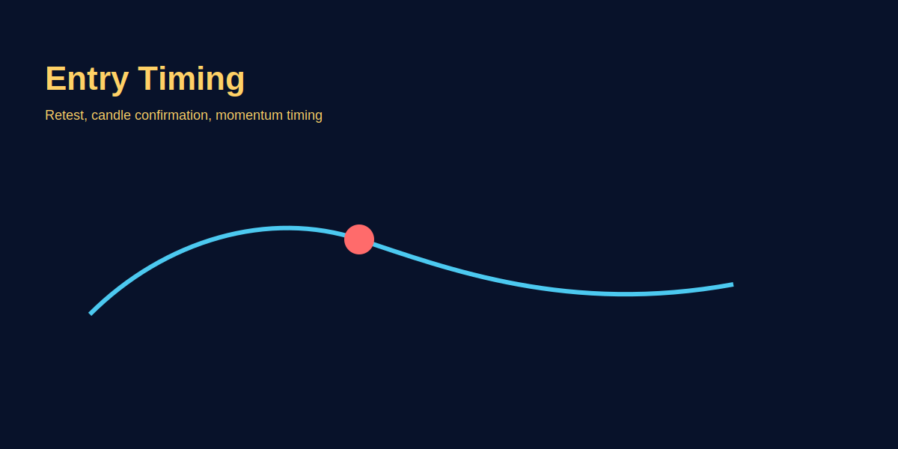

Entry Timing Logic
Intro
Timing decides whether your edge turns into profit. Follow clear entry rules to avoid whipsaws.
Step-by-step rules
- Define the setup and precise entry condition.
- Require confirmation (retest, candle close, momentum) before entering.
- Prefer smaller initial size and scale-in if setup continues.
GOLD example
For XAU/USD breakout above a consolidation, wait for a daily close above resistance and a retest as confirmation before taking the full-sized entry.
Image example
Common mistakes
- Entering on breakout without confirmation.
- Over-leveraging because of fear of missing out (FOMO).
Pro tips
- Combine timeframe confirmation—higher timeframe bias + lower timeframe entry signal.
- Use position sizing to manage partial entries.
Risk warning
Waiting for confirmation reduces false entries but can reduce reward; balance rules with expectancy testing.
FAQs
- Confirmation kitna strict hona chahiye?
- It depends on strategy—define it and stick to it. Common confirmations: retest, momentum, volume spike.